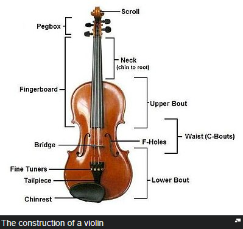

The violin, sometimes referred as a fiddle, is a wooden chordophone, and is the smallest, and thus
highest-pitched instrument (soprano) in regular use in the violin family. Smaller violin-type instruments exist,
including the violino piccolo and the pochette, but these are virtually unused. Most violins have a hollow
wooden body, and commonly have four strings (sometimes five), usually tuned in perfect fifths
with notes G3, D4,
A4, E5, and are most commonly played by drawing a bow across the strings. The violin can also be played by
plucking the strings with the fingers (pizzicato) and, in specialized cases, by striking the strings
with the
wooden side of the bow (col legno).
Violins are important instruments in a wide variety of musical genres. They are most prominent in the Western
classical tradition, both in ensembles (from chamber music to orchestras) and as solo instruments. Violins are
also important in many varieties of folk music, including country music, bluegrass music, and in jazz. Electric
violins with solid bodies and piezoelectric pickups are used in some forms of rock music and
jazz fusion, with
the pickups plugged into instrument amplifiers and speakers to produce sound. The violin has come to be
incorporated in many non-Western music cultures, including Indian music and Iranian music. The name fiddle
is
often used regardless of the type of music played on it.
The violin was first known in 16th-century Italy, with some further modifications occurring in the 18th and 19th
centuries to give the instrument a more powerful sound and projection. In Europe, it served as
the basis for the
development of other stringed instruments used in Western classical music, such as the viola.
Violinists and collectors particularly prize the fine historical instruments made by the Stradivari, Guarneri,
Guadagnini and Amati families from the 16th to the 18th century in Brescia and Cremona (Italy) and by Jacob
Stainer in Austria. According to their reputation, the quality of their sound has defied attempts to explain or
equal it, though this belief is disputed.Great of instruments have come
from the hands
of less
famous makers, as well as still greater numbers of mass-produced commercial "trade violins" coming from
cottage
industries in places such as Saxony, Bohemia, and Mirecourt. Many of these trade instruments were
formerly sold
by Sears, Roebuck and Co. and other mass merchandisers.
The components of a violin are usually made from different types of wood. Violins can be strung with gut, Perlon
or other synthetic, or steel strings. A person who makes or repairs violins is called a
luthier or violinmaker.
One who makes or repairs bows is called an archetier or bowmaker.
Top
Of Site
The word "violin" was first used in English in the 1570s. The word "violin" comes from "Italian violino,
diminutive of viola. The term "viola" comes from the expression for "tenor violin" in 1797, from Italian and Old
Provençal viola, [which came from] Medieval Latin vitula as a term which means 'stringed instrument', perhaps
[coming] from Vitula, Roman goddess of joy..., or from related Latin verb vitulari, "to cry
out in joy or
exaltation." The related term Viola da gamba meaning 'bass viol' (1724) is from Italian, literally "a viola
for the leg" (i.e. to hold between the legs)." A violin is the "modern form of the smaller, medieval
viola da
braccio." ("arm viola")
The violin is often called a fiddle. "Fiddle" can be used as the instrument's customary
name in folk music, or
as an informal name for the instrument in other styles of music. The word "fiddle" was first used in English
in the late 14th century. The word "fiddle" comes from "fedele, fydyll, fidel, earlier fithele, from Old
English fiðele 'fiddle', which is related to Old Norse fiðla, Middle Dutch vedele, Dutch
vedel, Old High German
fidula, German Fiedel, 'a fiddle'; all of uncertain origin." As to the origin of the word "fiddle",
the
"...usual suggestion, based on resemblance in sound and sense, is that it is from Medieval Latin vitula."
Top
Of Site

The earliest stringed instruments were mostly plucked (for example, the Greek lyre). Two-stringed, bowed
instruments, played upright and strung and bowed with horsehair, may have originated in the nomadic equestrian
cultures of Central Asia, in forms closely resembling the modern-day Mongolian Morin huur and
the Kazakh Kobyz.
Similar and variant types were probably disseminated along eastwest trading routes from Asia into the
Middle
East, and the Byzantine Empire.
Rebec, fiddle and lira da braccio are generally considered the ancestors of the violin , Several sources
suggest alternative possibilities for the violin's origins, such as northern or western
Europe. The
first makers of violins probably borrowed from various developments of the Byzantine lyra. These included
the
vielle (also known as the fidel or viuola) and the lira da braccio. The violin in its present form
emerged in early 16th-century northern Italy. The earliest pictures of violins, albeit with three
strings, are
seen in northern Italy around 1530, at around the same time as the words "violino" and "vyollon" are seen in
Italian and French documents. One of the earliest explicit descriptions of the instrument, including its tuning,
is from the Epitome musical by Jambe de Fer, published in Lyon in 1556. By this time, the violin had already
begun to spread throughout Europe.
The violin proved very popular, both among street musicians and the nobility; the French king Charles IX ordered
Andrea Amati to construct 24 violins for him in 1560. One of these "noble" instruments, the
Charles IX, is
the oldest surviving violin. The finest Renaissance carved and decorated violin in the world is the
Gasparo da
Salò (c.1574) owned by Ferdinand II, Archduke of Austria and later, from 1841, by the Norwegian virtuoso Ole
Bull, who used it for forty years and thousands of concerts, for its very powerful and beautiful tone, similar
to that of a Guarneri. "The Messiah" or "Le Messie" (also known as the "Salabue") made by Antonio Stradivari
in 1716 remains pristine. It is now located in the Ashmolean Museum of Oxford.
Top
Of Site
A violin generally consists of a spruce top (the soundboard, also known as the top plate,
table, or belly),
maple ribs and back, two endblocks, a neck, a bridge, a soundpost, four strings, and various
fittings,
optionally including a chinrest, which may attach directly over, or to the left of, the tailpiece. A distinctive
feature of a violin body is its hourglass-like shape and the arching of its top and back. The hourglass shape
comprises two upper bouts, two lower bouts, and two concave C-bouts at the waist, providing clearance for the

bow. The "voice" or sound of a violin depends on its shape, the wood it is made from, the graduation (the
thickness profile) of both the top and back, the varnish that coats its outside surface and
the skill of the
luthier in doing all of these steps. The varnish and especially the wood continue to improve with
age, making
the fixed supply of old well-made violins built by famous luthiers much sought-after.
The majority of glued joints in the instrument use animal hide glue rather than common white glue for a number
of reasons. Hide glue is capable of making a thinner joint than most other glues. It is reversible (brittle
enough to crack with carefully applied force and removable with hot water) when disassembly is
needed. Since
fresh hide glue sticks to old hide glue, more original wood can be preserved when repairing a joint. (More
modern glues must be cleaned off entirely for the new joint to be sound, which generally involves scraping
off
some wood along with the old glue.) Weaker, diluted glue is usually used to fasten the top to the
ribs, and the
nut to the fingerboard, since common repairs involve removing these parts. The purfling running around the edge
of the spruce top provides some protection against cracks originating at the edge. It also allows the top to
flex more independently of the rib structure. Painted-on faux purfling on the top is usually a
sign of an
inferior instrument. The back and ribs are typically made of maple, most often with a matching striped
figure,
referred to as flame, fiddleback, or tiger stripe.
The neck is usually maple with a flamed figure compatible with that of the ribs and back. It carries the
fingerboard, typically made of ebony, but often some other wood stained or painted black on
cheaper instruments.
Ebony is the preferred material because of its hardness, beauty, and superior resistance to wear. Fingerboards
are dressed to a particular transverse curve, and have a small lengthwise "scoop," or concavity, slightly more
pronounced on the lower strings, especially when meant for gut or synthetic strings. Some old
violins (and some
made to appear old) have a grafted scroll, evidenced by a glue joint between the pegbox and neck.
Many authentic
old instruments have had their necks reset to a slightly increased angle, and lengthened by about a centimeter.
The neck graft allows the original scroll to be kept with a Baroque violin when bringing its neck into
conformance with modern standards.
Top
Of Site

Strings were first made of sheep gut (commonly known as catgut, which despite the name, did not come from cats),
or simply gut, which was stretched, dried, and twisted. In the early years of the 20th century, strings were
made of either gut or steel. Modern strings may be gut, solid steel, stranded steel, or
various synthetic
materials such as perlon, wound with various metals, and sometimes plated with silver. Most E strings are
unwound, either plain or plated steel. Gut strings are not as common as they once were, but many
performers use
them to achieve a specific sound especially in historically informed performance of Baroque music. Strings have
a limited lifetime. Eventually, when oil, dirt, corrosion, and rosin accumulate, the mass of the string can
become uneven along its length. Apart from obvious things, such as the winding of a string
coming undone from
wear, players generally change a string when it no longer plays "true" (with good intonation on the
harmonics),
losing the desired tone, brilliance and intonation. String longevity depends on string quality and playing
intensity.
Top
Of Site
A violin is tuned in fifths, in the notes G3, D4, A4, E5. The lowest note of a violin, tuned
normally, is G3, or
G below middle C (C4). (On rare occasions, the lowest string may be tuned down by as much as a fourth, to
D3.)
The highest note playable is less well defined: E7, the E two octaves above the open string (which is tuned to
E5) may be considered a practical limit for orchestral violin parts, but it is often possible to play
higher, depending on the length of the fingerboard and the skill of the violinist. Yet higher
notes (up to C8)
can be sounded by stopping the string, reaching the limit of the fingerboard, and/or by using artificial
harmonics.
Top
Of Site
The arched shape, the thickness of the wood, and its physical qualities govern the sound of a violin. Patterns
of the node made by sand or glitter sprinkled on the plates with the plate vibrated at certain frequencies,
called Chladni patterns, are occasionally used by luthiers to verify their work before
assembling the
instrument.
Top
Of Site

Apart from the standard full (4⁄4) size, violins are also made in so-called fractional sizes
of 7⁄8, 3⁄4, 1⁄2,
1⁄4, 1⁄8, 1⁄10, 1⁄16, 1⁄32 and even 1⁄64. These smaller instruments are commonly used by young
players whose
fingers are not long enough to reach the correct positions on full-sized instruments.
While related in some sense to the dimensions of the instruments, the fractional sizes are not intended to be
literal descriptions of relative proportions. For example, a 3⁄4-sized instrument is
not three-quarters the
length of a full size instrument. The body length (not including the neck) of a full-size, or
4⁄4, violin is 356
mm (14.0 in), smaller in some 17th-century models. A 3⁄4 violin's body length is 335 mm
(13.2 in), and a 1⁄2
size is 310 mm (12.2 in). With the violin's closest family member, the viola, size is specified as
body length
in inches or centimeters rather than fractional sizes. A full-size viola averages 40 cm (16 in). However, each
individual adult will determine which size of viola to use.
Occasionally, an adult with a small frame may use a so-called 7⁄8 size violin instead
of a full-size instrument.
Sometimes called a lady's violin, these instruments are slightly shorter than a full size
violin, but tend to be
high-quality instruments capable of producing a sound comparable to that of fine full size violins. The sizes of
5-string violins may differ from the normal 4-string.
Top Of Site
This site was made By Fatih DemiralTM
Adios.